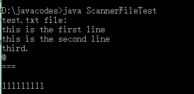

Scanner不仅能够读取用户的键盘输入，还可以读取文件输入。
需要在创建Scanner对象的时候传入一个File对象作为参数。代码如下：
1 import java.util.Scanner;
2 import java.io.File;
3 public class ScannerFileTest{
4 public static void main(String[] args)throws Exception{
5 Scanner sc=new Scanner(new File("test.txt"));
6 System.out.println("test.txt file:");
7 while(sc.hasNextLine())//逐行读取文件内容
8 {
9 System.out.println(sc.nextLine());
10 }
12 }
13 }输出如下：

需要注意的地方：
1.因为我直接使用编辑器写的，所以要手动导入包。否则会提示找不到符号。
2.涉及文件输入，可能引发文件IO相关异常，所以主程序声明throws Exception表明main方法不处理任何异常。